老娘舅案例解析截止 2020 年 11 月，华与华与老娘舅的合作已经进入三个年头。在连续服务老娘舅的 2年时间里，从品牌顶层设计到营销日历创意，从持续改善到餐具及空间设计，老娘舅案例完整体现了华与华“全案服务之价值、终身服务之理念”。很多客户来华与华都会问一个问题：除了创作一个超级符号，想一句超级口号，你们还能做啥？为什么那么多客户愿意跟华与华持续合作那么多年？华与华全面服务、持续服务客户的秘诀是什么？我们“终身服务”的自信从哪里来？今天就以老娘舅为例，跟你分享华与华是如何全面服务、持续服务老娘舅的，及其背后的核心理念：所有的事都是一件事。首先回答一个问题，除了最为大家所知的“舅字标”超级符号之外，在这 2 年内华与华还为老娘舅做了哪些事呢？第一年，华与华为老娘舅制定了“中国米饭类快餐第一品牌”的企业战略，创意了超级符号“舅”字标、品牌谚语“米饭要讲究，就吃老娘舅”、超级 IP 形象、超级招牌设计，还提供了“持续改善”服务，一举奠定老娘舅管用 100 年的品牌顶层设计。
第二年，开创了“ 99 舅舅节”、“老娘舅新米节”等营销日历活动，确定了全年的营销节拍；不断玩活 IP 形象，重新开发了“老娘舅大米”零售产品，不仅如此，华与华开创性地为老娘舅进行餐具工业设计、整店空间设计，为老娘舅持续创造价值、持续积累品牌资产，让老娘舅少走弯路。我们可以看到，除了舅字标的超级符号，华与华为老娘舅做了各种类型、内容丰富的创意内容。华与华给自己的定义叫“企业的战略营销品牌终身顾问”，这里有两层意思，其中“战略营销品牌”就是“全案服务、全面服务”， 也就是说跟战略营销品牌相关的所有事情，都是我们的事情。“终身顾问”就意味着“持续服务、终身服务”。
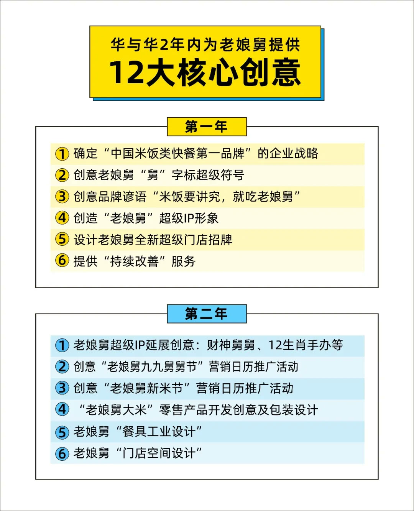
1顶层设计，一捅到底老娘舅最底层的基因和资源禀赋就是品牌名“老娘舅”和“米饭”，这是所有战略和创意的原点，所有战略和创意要紧紧围绕这个原点开展：1 ）老娘舅的企业战略是做“中国米饭类快餐第一品牌”；2 ）符号即战略，老娘舅品牌的超级符号是一个“米饭碗”和“舅”字的组合；3 ）品牌谚语是“米饭要讲究，就吃老娘舅”， 实现品牌名与品牌价值完美契合；4 ）老娘舅的 IP 形象，是一个舅舅戴了一个倒扣的米饭碗帽子，把大大的超级符号“舅字标”作为帽徽设计了进去；5 ）在核心创意出来之前就进行了 “持续改善”服务，重新进行老娘舅门店物料系统设计，并在一家门店实地做出来、测验实际落地效果。企业战略、品牌战略、超级符号、品牌谚语、超级 IP 、持续改善都是一件事儿，而这些所有的事都全部呈现在老娘舅门店的招牌上，招牌即战略、招牌即品牌、招牌即产品、招牌即符号、招牌即 IP 。

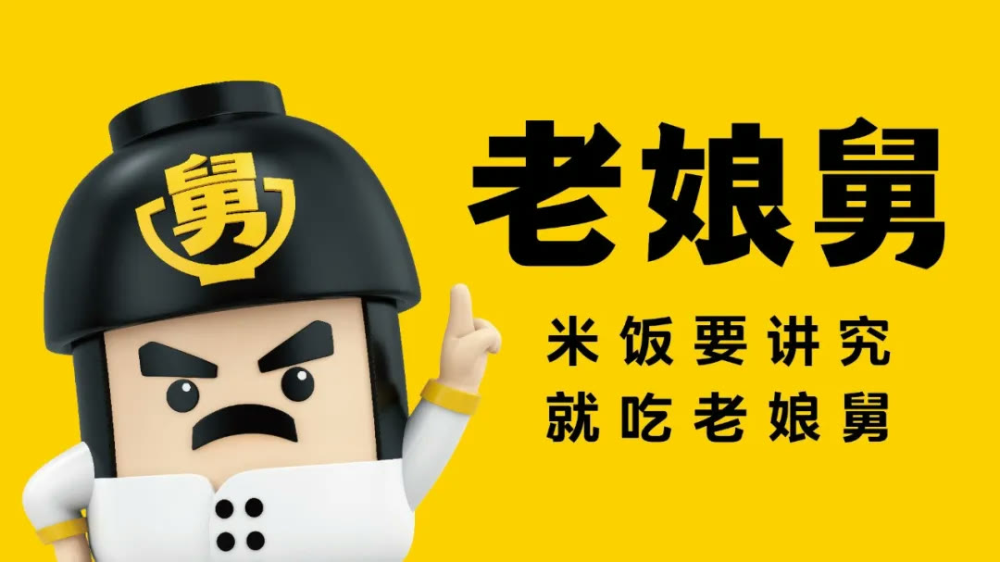
这一切都是在我们服务老娘舅的第一年、一个团队、围绕一条主线，一次成型、一竿子捅到底。所有的创意都是环环相扣、互相强化，是一套独特的创意组合，形成了一个结构性壁垒和有强大的叠加效应。
2两大营销节日活动踩准营销节拍在华与华服务老娘舅的第二年里，我们一口气为老娘舅创意了两个营销日历活动。老娘舅九九舅舅节第一个是“老娘舅九九舅舅节”，这是为“舅舅”打造的一个专属的节日。我们经常会过父亲节、母亲节，而华与华给舅舅创造了一个节日，来强化老娘舅核心品牌资产。这也是我们常说的文化母体。“九九舅舅节”从含舅舅的文化母体中来，到舅舅的文化母体中去，进而壮大文化母体，并且“舅舅”谐音“ 99 ”，天然对应一个日子： 9 月 9 日。通过“老娘舅九九舅舅节” 强化老娘舅品牌与生俱来的戏剧性，占据“舅舅”这个称谓及背后的文化原力。在活动形式的策划上，我们首先从“事件、词语 、符号”三个维度进行考量，目的是创造体验、留下记忆、讨论传播，具体有以下 3 点：
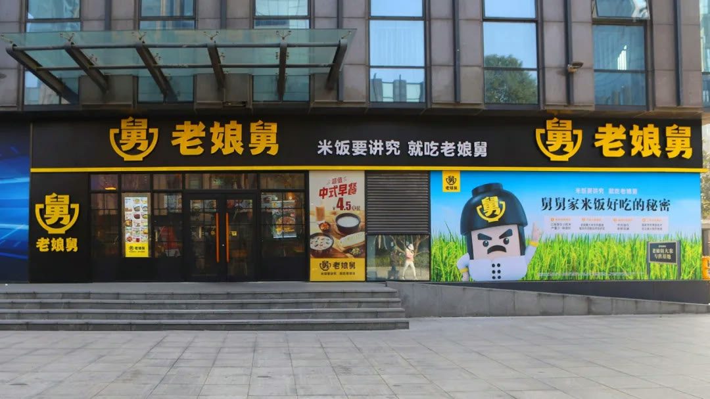
1 ）有事件就要有仪式，仪式能营造氛围、创造体验、强化记忆；2 ）活动形式最好是能互动，而且是可复制、低成本、易执行的互动；3 ）有节日就意味着有活动，有活动就意味着有福利，福利意味着参与率。基于以上几点我们为其创意了口号“大声喊舅舅 立减九块九”，只要大声喊出“米饭要讲究，就吃老娘舅！舅舅！”达到 99 分贝，即赠 9 . 9 元抵用券，任意米饭套餐立减 9 . 9元。
我们特地为“九九舅舅节”设计了超级道具——分贝仪人型立牌，每家店都设置一个，所见即所得，喊到“ 99 ”就爆表！
“老娘舅九九舅舅节”开展当天， 294 家门店共有 4 . 4 万参与了“大声喊舅舅 立减九块九”活动。并且， 9 月 9 日当日客单数环比提升 22 . 6 %，同比提升 9 %；销售额环比提升 13 . 7 %，同比提升 3 . 4 %。
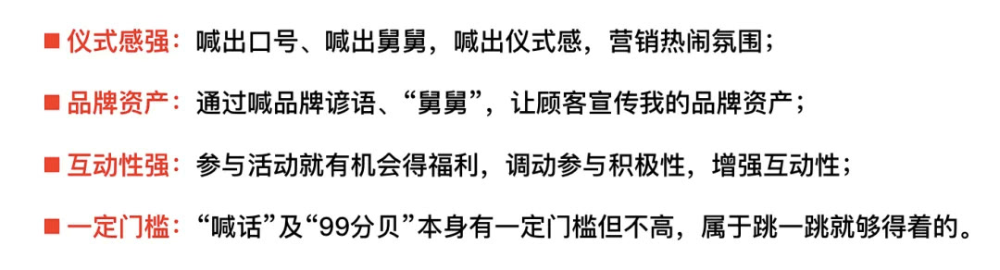
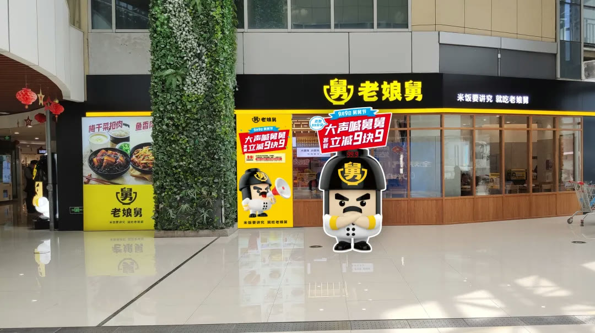
并为其创意活动口号“ 10 月收割 11 月上桌”， 有数字、有事实、有动作、有画面，用数字和动作传递“老娘舅新米”新鲜的程度和价值，同时突出了新米节的节日时间，是产品上新的通知。消费者购买新米套餐，加 3 元可以换购一份 500g 的袋装新米，一方面把体验带回家，另一方面也推广了我们的大米零售产品，一举两得！老娘舅新米节刚上市一周就远远超出预期， 500g 袋装新米产品直接爆单卖断货了，工厂每天 24 小时开工也供应不上，甚至因为超负荷烧坏了机器，导致三天不能生产，这也是我们预想不及的。
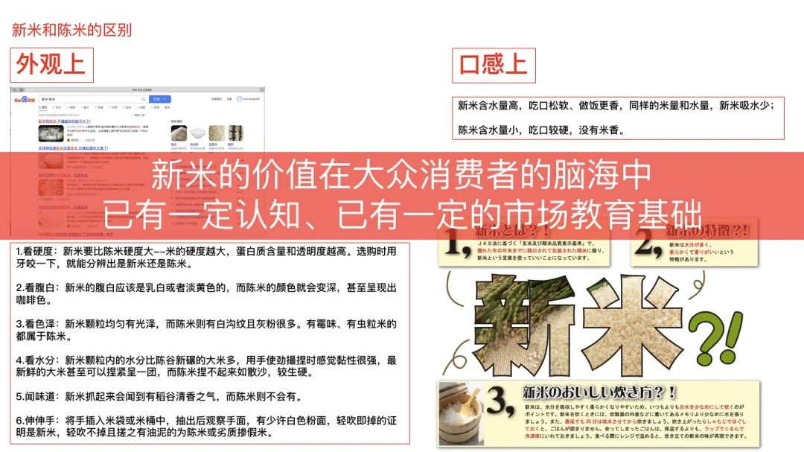
为什么叫营销日历呢？一方面，日历是循环往复的，另一方面日历是有固定节拍的。营销日历其实就是“品牌节日”，就是每年固定时间，重复同一个推广活动，培养消费习惯，形成消费者“驯养”。营销日历与普通的推广活动创意有两个本质的区别：
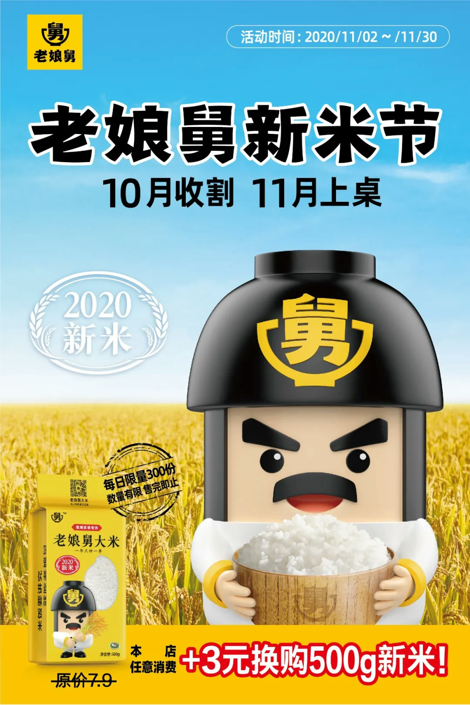
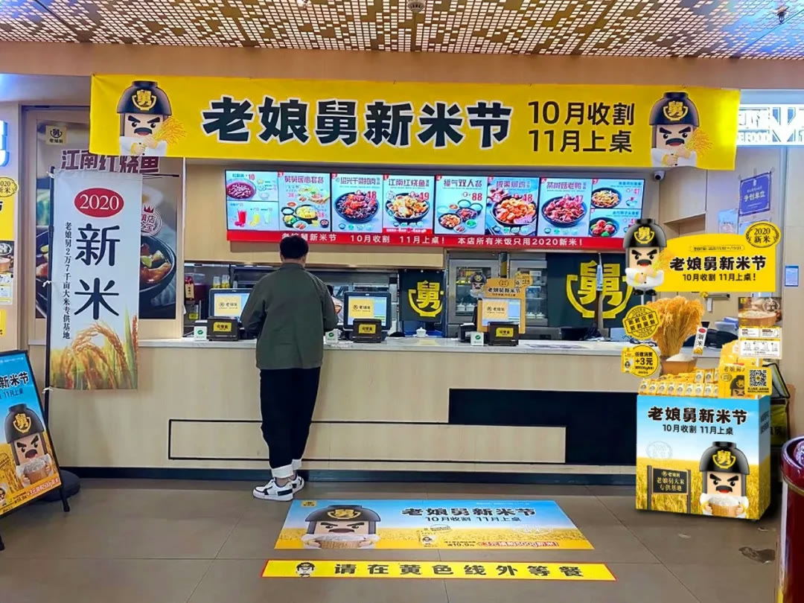
一是营销日历活动是品牌独有的节日，是充分挖掘品牌自身与生俱来的戏剧性，为品牌量身打造的节日，能够代表这个品牌的、独特的、有唯一性的品牌节日。其二，是这个营销日历活动是在固定时间开展，并且是每年重复开展的，是能够形成品牌资产的推广活动创意。营销日历的推广活动创意可以实现大家的一个终极愿望：那就是“少干活，多赚钱”！舅舅再也不用担心每年都想新的推广创意活动了。所以，我们会发现老娘舅的营销日历，都叫“首届”，“老娘舅首届九九舅舅节”、“首届老娘舅新米节”。有首届，就会有第二届、第三届，做得越久，成本越低，积累的越久价值越大。西贝的亲嘴打折已经是第六届了，足力健老人鞋的重阳节活动已经第三届了，老娘舅的舅舅节、新米节这才刚刚开始，每年创意不变，只会持续精进。我们可以看到，营销日历对于老娘舅其实是新的价值，但对华与华整体而言并不新鲜，属于常规操作。今年我们为老娘舅创造的最大价值在于“餐具的工业设计”和“门店空间设计”，其他项目都是把华与华方法导入了新的行业，而我们在服务老娘舅中，直接把华与华方法直接导入了一个新的专业，从而丰富了华与华方法的整个体系。
3老娘舅餐具设计华与华工业设计代表作大家可能不知道，我们华与华有一个强大的工业设计团队，老娘舅的餐具设计就是他们的经典代表作之一。如何用华与华方法设计好一套餐具呢？最核心的还是“始终服务于最终目的，随时回到常识思考”。从常识去思考，从餐具使用的现场出发。我们先看看餐具的整个使用过程。餐具的使用有两大现场，一个是顾客现场，一个是员工现场。顾客现场要关注的是使用体验，员工现场首要关注的是运营效率。餐具设计的最终目的就是两个：一是提升使用体验，二是提高运营效率。米饭是老娘舅的核心价值，好马配好鞍，好饭配好碗。因为文章篇幅有限，我们就以老娘舅的米饭碗为例，来看看我们是如何为老娘舅设计餐具的。
老娘舅原来的米饭碗，严格意义上讲，不是一个碗，而是一个缩小的盆，像一个钵，上下粗细差不多。
这个碗，有几个问题：1 ）一眼看过去，不美观，颜值不够；2 ）很多人喜欢单手拿碗，直径偏大，不便于单手拿碗；3 ）碗体整体很厚、整体偏重，且费材料；4 ）上下一样粗，同样高度和碗口直径的碗，同样的米饭量，看来不够丰盛，感觉没盛满；5 ）上下粗细差别不够显著，摞起来的时候，摞不高，高了就会倒，同样数量的碗，放在篮筐里也更占空间；6 ）因为这个碗需要加热消毒，碗足没有设计豁口，不便于导热，而容易龟裂，造成不必要的损耗；7 ）这个碗还要考虑与主菜盘、小菜碟、蒸蛋盅的组合和搭配，整体视觉上，位置仅次于主菜盘，又明显比小菜碟和蒸蛋盅更突出。这就是“把问题当问题看的眼光”，要追求极致的体验和效率。始终服务于最终目的，解决以上 6 个问题就是我们的目的，具体怎么设计呢？首先是碗型的选择，中国有几千年的碗形制作和使用经验，我们大不必去凭空设计一个全新的碗。最简单方式就是搜遍奇峰打草稿，创意之前找参考。我们研究了各朝代典型碗型及特征，发现古代的碗一共是 7 大类，分别是：高足碗、宫碗、鸡心碗、斗笠碗、折腰碗、卧足碗、孔明碗。然后对这七类碗进行建模，并用 3D打样做出实物进行对比。

从“美观度”和“叠放的空间利用率”两个维度进行评判。经过对比试验，我们结合宫碗与鸡心碗的形制特征，设计了这款经典大气，永不过时的老娘舅碗。
碗型确定，接下来就要考虑碗的大小。碗的大小，从两个角度考量，一是要符合人机科学，即产品与人体的尺寸、形状及用力是否配合，产品是否顺手和方便使用；二是需要提高菜品的丰盛感。综合从先秦至清代各时期碗型的高度、口径的取值范围，我们发现碗的高度值范围为5 - 9cm ，口径值范围为 12 - 18cm 。其次，考虑饮食习惯。我们在门店观察中注意到很多顾客会端着饭碗吃饭，所以设计时要考虑单手端取的使用方便性。其三，考虑手的生理结构：从生理结构研究适用性。根据生物学数据，人类手掌长度约在 16 - 20cm 之间，拇指与中指的距离为 20cm ，手掌宽度约为 7 - 19cm 、两手合围，直径约为 9 . 5 - 12cm 。也就是说，将碗的直径做成 9 . 5 - 12cm 以内，是最适合我们一只手端取的。
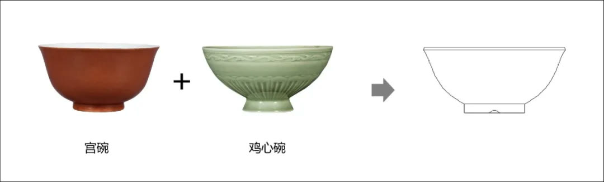
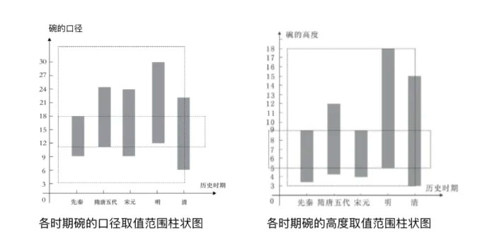
而我们饭碗的高度，一般是碗的直径的一半，最多也不会超过 7cm ，这正是大拇指的高度，这样，我们能正好用拇指扣住碗沿。
综合这三点，取其合集，我们得出在碗的高度在 5 - 7cm ，口径在 9 . 5 - 12cm 这个参考区间。碗的大小要考虑的第二个维度是提高产品丰盛感，让同样分量的米饭，显得更饱满。所以我们在这个区间基础上，把口径适当加宽，并且调整了碗底部的线条，使之装上米饭更加饱满丰盛。调整过后的米饭碗不仅拿在手里大小适中、适合单手拿取，也体现了产品的丰盛感。除了碗型、大小之外，我们还做了 4 个处理：1 ）碗口口沿的加厚处理，是为了防止摆放和清洗过程的碰撞破损；2 ）碗侧面的波纹设计，有防滑功能；3 ）碗底增加了“舅”字标的超级符号，强化品牌；4 ）碗底设计了一个缺口，别小看这个缺口，小缺口，有大价值：·不易存水，防止水渍存留，从而滋生细菌；·能在保温过程中更好的传导热量，还能减少因为加热过久造成的龟裂；·可以防止碗底和桌面形成气压，自动漂移。5 ）充分考虑了叠放的功能性，提升存储空间的利用率。
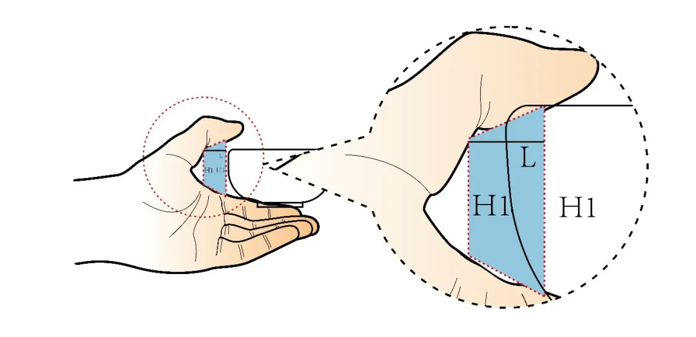
▲华与华设计前 vs 华与华设计后
新 碗 与 旧 碗 做 了 摞 放 测 试 之 后 发 现 ， 同 样 是 15 个 碗 ， 原 来 的 15 个 碗 摞 放 高 度 是470mm ，新的碗摞放之后高度只有 308mm 。在实际使用的篮筐内，原先能放 45 个，现在能放 72 个，空间利用率提高了 60 %。
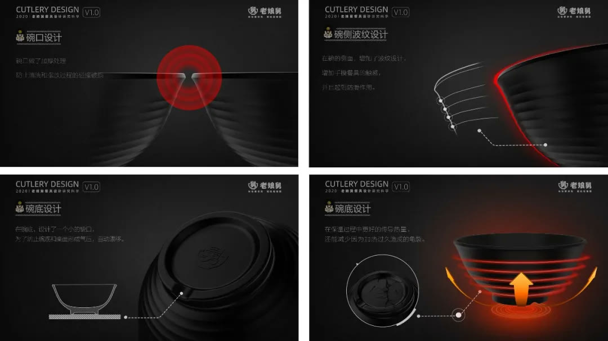
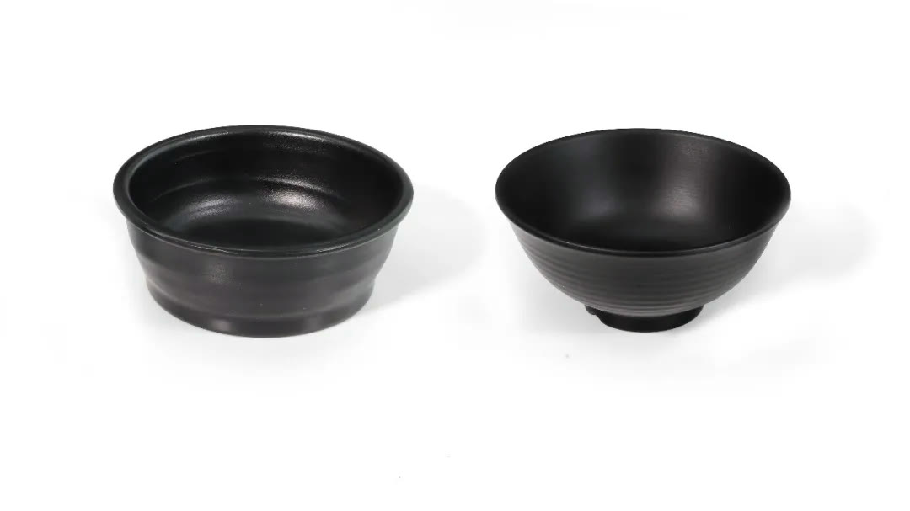
除了老娘舅的米饭碗，我们用同样方法设计了主菜盘、蒸蛋盅、小彩蝶、托盘、儿童套餐餐具等等一整套的老娘舅餐具。
▲华与华设计前 vs 华与华设计后
什么叫创意？就是创造性的解决问题，而通向创意最短的路就是华与华方法的套路。而通往华与华方法最短的路就是“始终服务于最终目的“的路，就是华与华人的这种钻研工法的精神。
4老娘舅空间设计业务的深水区为什么华与华这样一家以“超级符号”、“品牌谚语”、“持续改善”闻名的营销咨询公司会涉足空间设计呢？
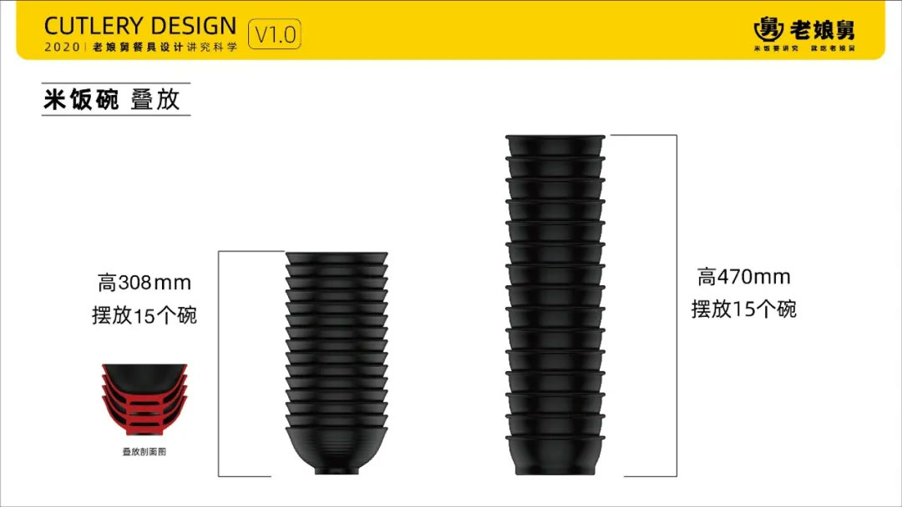
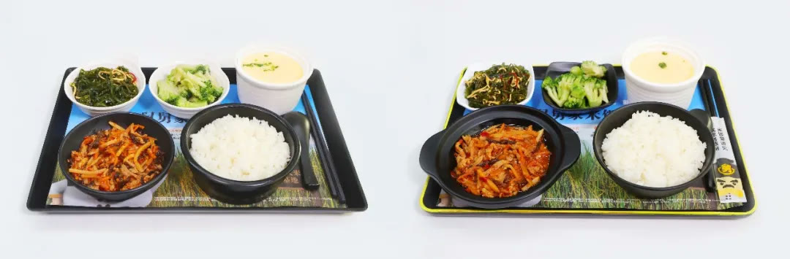
因为我们服务的很多企业都遇到了相同的问题，几乎所有有门店的企业，都存在提升空间营运效率和顾客体验的需求。尤其是竞争激烈、讲究坪效和翻台率的餐饮企业，但少有空间设计公司能真正从“做生意”的角度来进行空间设计。另一方面，对华与华而言，门店作为企业最重要的自媒体和生产工具，要想帮企业实现门店效益的最大化，门店空间设计是绕不过去的一环。我们的每一个动作都是“必有事焉”，遇到了什么问题，就想办法解决什么问题，其实我们之前也为很多客户做过空间设计，不过只是作为附加服务，随着空间设计的需求量越来越多，经验也越攒越多，我们成立了单独的业务部门——空间设计组，老娘舅是华与华空间设计组的第一个客户。华与华为老娘舅门店做的空间设计主要分为三个部分，本篇文章我们简要介绍几个机关及原理。对于老娘舅门店的空间设计，我们主要围绕三个维度：1 ）后厨：排除浪费，提高运营效率；2 ）前厅：降本增效，提升顾客体验；3 ）店外：刺激信号，提升发现感。首先，关于后厨设计，一般空间设计公司不敢碰后厨，因为“水太深”。没有在一线摸爬滚打过的根本不知道水深水浅，尤其对于老娘舅这样一家成立了 20 年、能做到 60 秒出餐的中式快餐企业。在提案之前，他们根本没想到我们能把产区设计改善也做了，并且把整个后厨的操作模型在老娘舅总部实地还原了，不仅如此还 1 ： 1 打样了一个沙盘模型，把老娘舅的小伙伴们震惊了一番。
华与华干餐饮企业后厨设计也是头一回，我们敢干这件事的底气和胆量，就在于我们是从现场、现物、现实出发和始终服务于最终目的思维方式。我们三维设计团队和项目组同事跑遍了广深沪京所有知名快餐的餐厅研究空间布局设计，先学习总结别人的优秀经验；再去门店当了两天店员，从餐区到后厨，都轮岗了一遍，在对每个岗位都有基础了解；然后安装摄像头记录后厨所有工作人员的每一个动作和花费的时间。本着“只要有动作就有浪费”的认识和“一秒钟主义”的精神，能省一秒是一秒地去排除浪费、提升效率。我们发现，生产一碗饭本质上和生产汽车是一样，我们要做的就是像生产汽车一样生产一碗饭。在需要的时刻，以需要的数量，让每个所需的原料不多不少地送到生产线旁边，每个人的动作都是最优方案，每个环节之间无缝对接没有返工和待工，每个步骤“匀速、准时、高效”地运转，我们的最终目的就是排除作业中的浪费问题。只要有动作，就会有浪费。
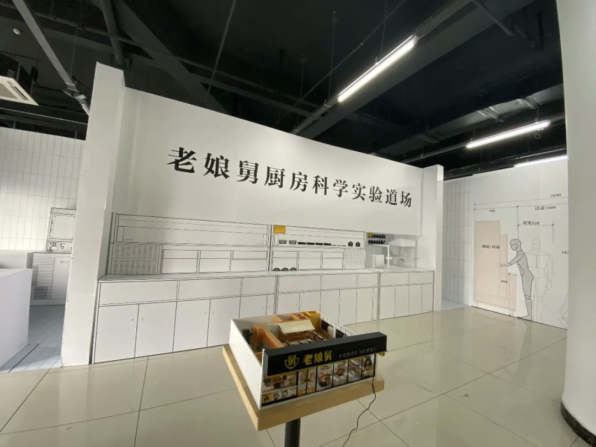
做快餐的应该很多人都看过以麦当劳老板雷·克劳克为原型的电影《大创业家》，其中的一个片段就是麦当劳兄弟改善后厨动线的事情。绝大多数人只是看到了他们这样做，而我们的团队就照着这种做法做到了！
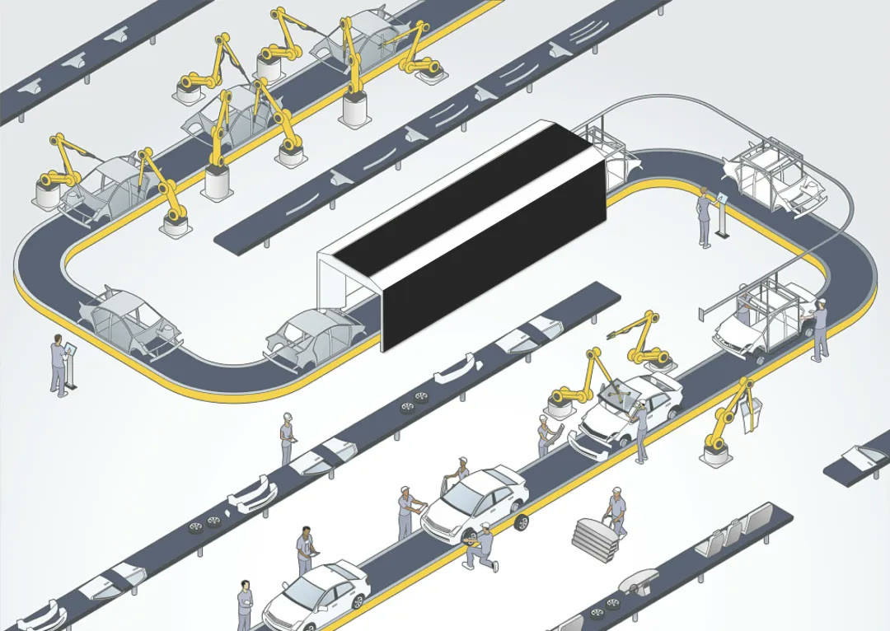
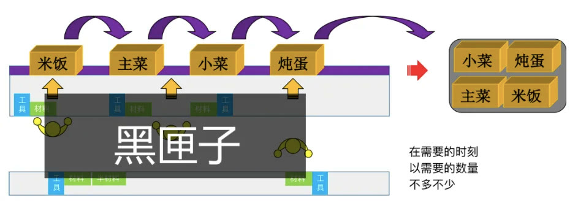
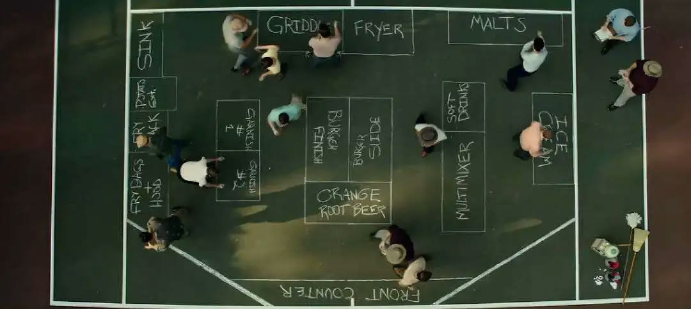
▲《大创业家》中麦当劳兄弟改善后厨动线的模拟场景
我们完整观察一家门店后厨一天的时间，以秒为单位，记录了后厨高峰期主操作台每一个人的每一个动作并分解到最小单位：共有 2502 个动作，发现转身 333 次、弯腰 128 次、蹲下 19 次，详细统计后厨每一个设备之间的交互频次，甚至细到比如“在午市高峰期 11 点到 12 点，转身拿主菜碗 13 次，总用时 79 秒”、“ 一小时冰箱开关的次数是 96 次，每次开关冰箱的平均时间是 2 . 5秒”。通过实际操作和动作观察分解，发现 7 大类型浪费， 17 个可改善问题，主要分为：5 大动作的浪费、 1 大库存的浪费、 1 大加工的浪费、 4 大设备排布的浪费 4 大设备设计的浪费、 2 大空间利用率不足的浪费。针对每个浪费都给出了相应的改善方案。
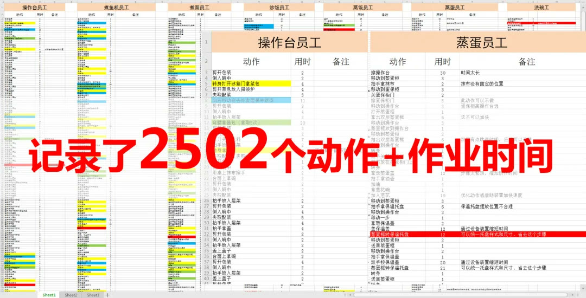
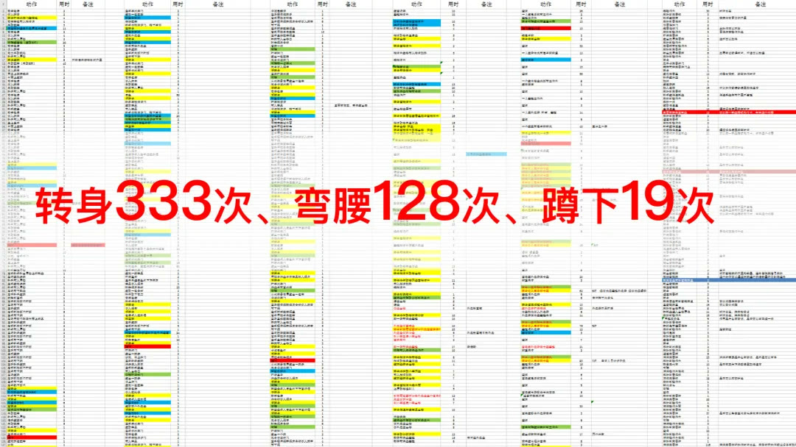
在前厅功能设计中，一个快餐店的餐桌的大小如何确定？桌面的宽度应该取决于用餐人的胳膊的大小，桌面的长度应该略大于两个餐盘对拼起来的长度。同 时 考 虑 到 桌 面 长 度 还 取 决 于 板 材 的 大 小 。 一 张 1220cm * 2440cm 的 板 材 ，500 * 680 的桌面尺寸，可以做 6 张桌子。如果是 500 * 600 就可以做 8 张桌子，得材率提升 25 %。最后我们得出， 2 人位餐桌的大小应该是 500 * 600 。
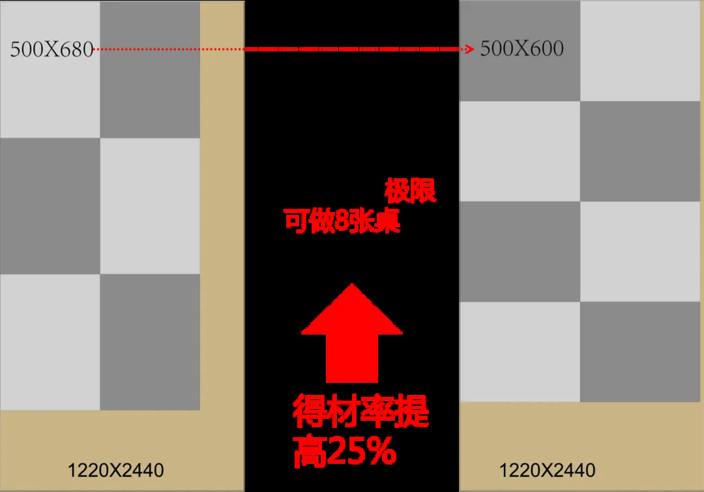
在同等面积情况下，如上图中的 A 型排布会有 12 个座位入座会干扰到别人，让人感到不舒服。而B型排布不舒服座位为2个，并能充分利用过道空间用餐，减少拥挤感。研究顾客入座动线，如何调整座位的排布方式，更方便顾客快速入座，同时不干扰他人用餐。
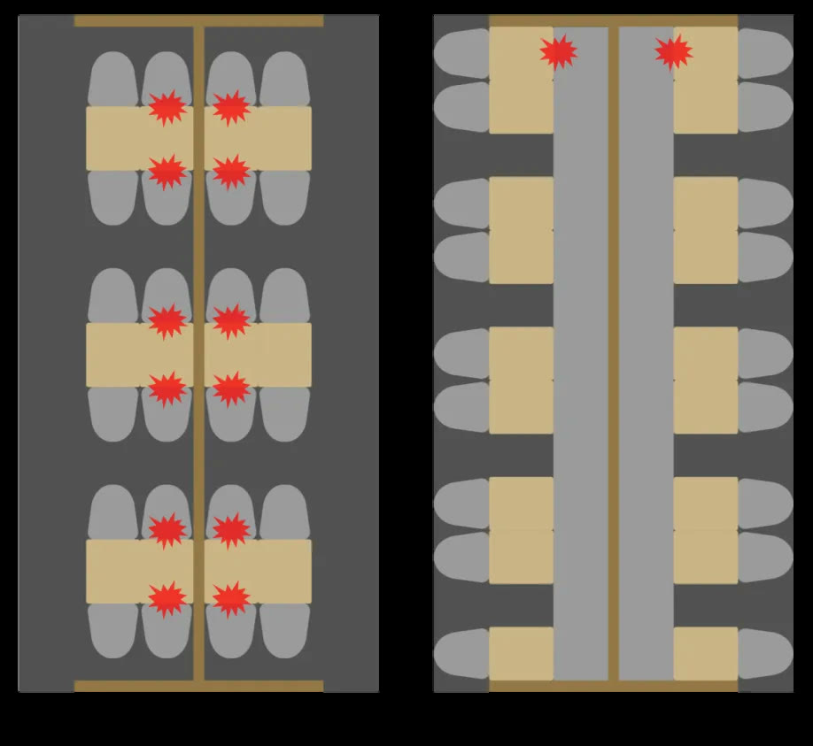
我们通过优化厨房面积、辅助空间、座位大小及排布的调整，以一个 150 平米的餐厅为例，通过设计优化，厨房面积减少 10 %，空间利用率提升 28 %，座位数提升 30 %，平均可以多出来 10 个餐位。这就叫“凡事彻底、机关算尽”！
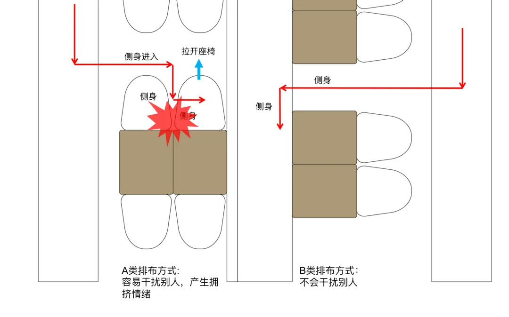
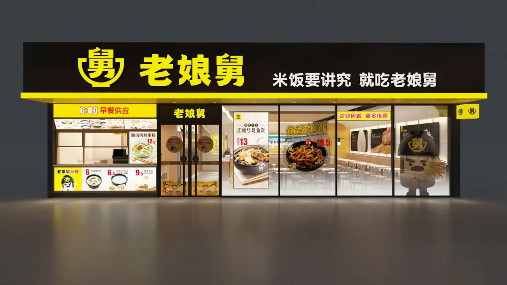
▲目前，老娘舅全新空间设计第一家门店预计将在 1 月初开业，敬请期待！
本文总结华与华的设计师不仅是手艺人，更是生意人，是能通过手艺提升销量的生意精。很多人说华与华就是实战、落地、接地气，为什么？看起来的毫不费力，其背后都是用尽了全力。从战略、到创意到手艺，到工艺、材料，要整体、系统、彻底的思考，这就是所有的事都是一件事。华与华的创意根本不存在是否能落地，因为它本来就在地上。最后，总结老娘舅项目赢取今年百万大奖赛的三大获奖理由：
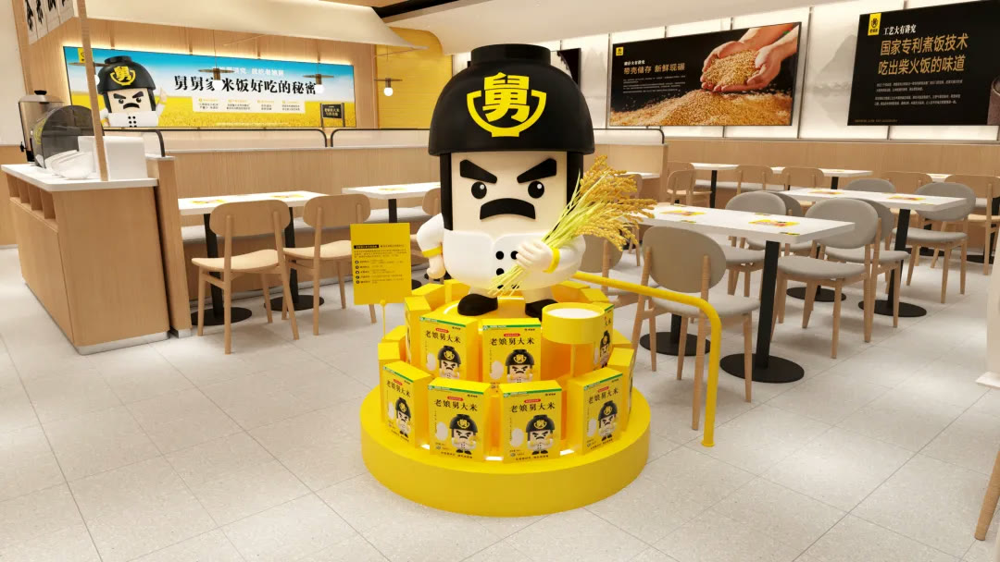
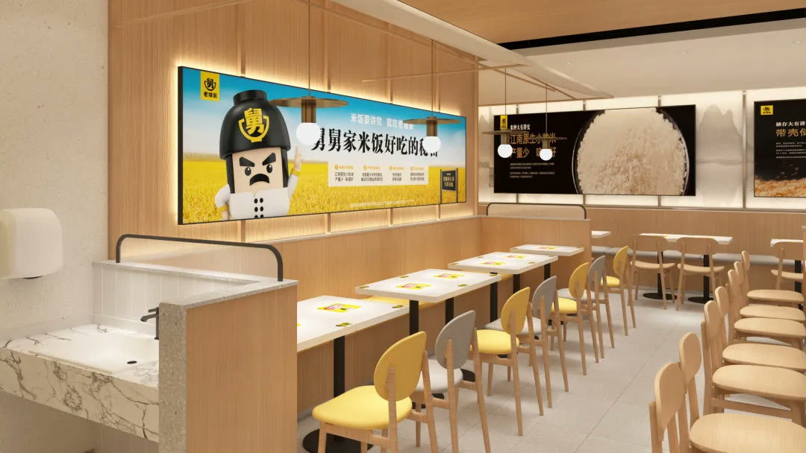
第一，一战而定，超级符号、品牌谚语、超级 IP 形象，奠定老娘舅管用 100 年的品牌顶层设计；第二，在短短两年时间里，提供了 12 项关键创意服务，完整体现华与华全面服务的价值和终身服务理念，及“所有的事都是一件事”的核心思想；第三，全面推动老娘舅品牌活力提升、品牌资产积累、销售额增长、利润增长！